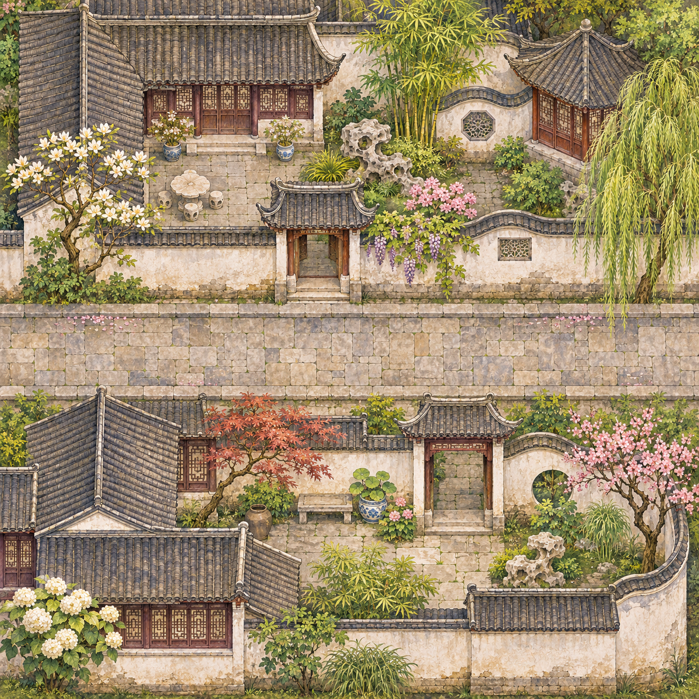
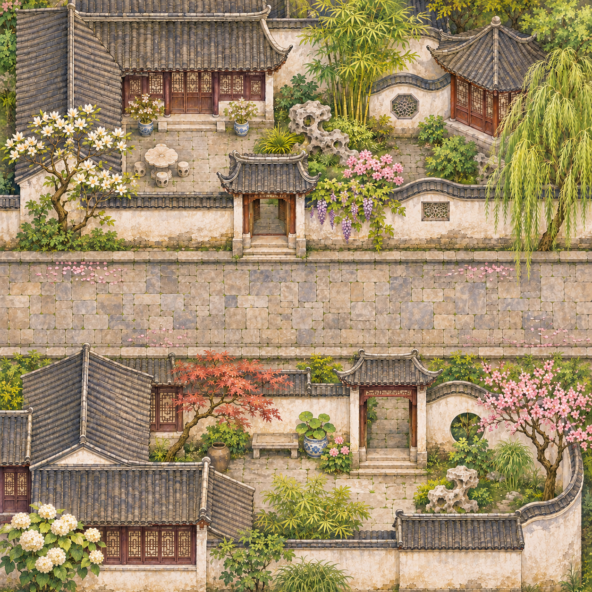
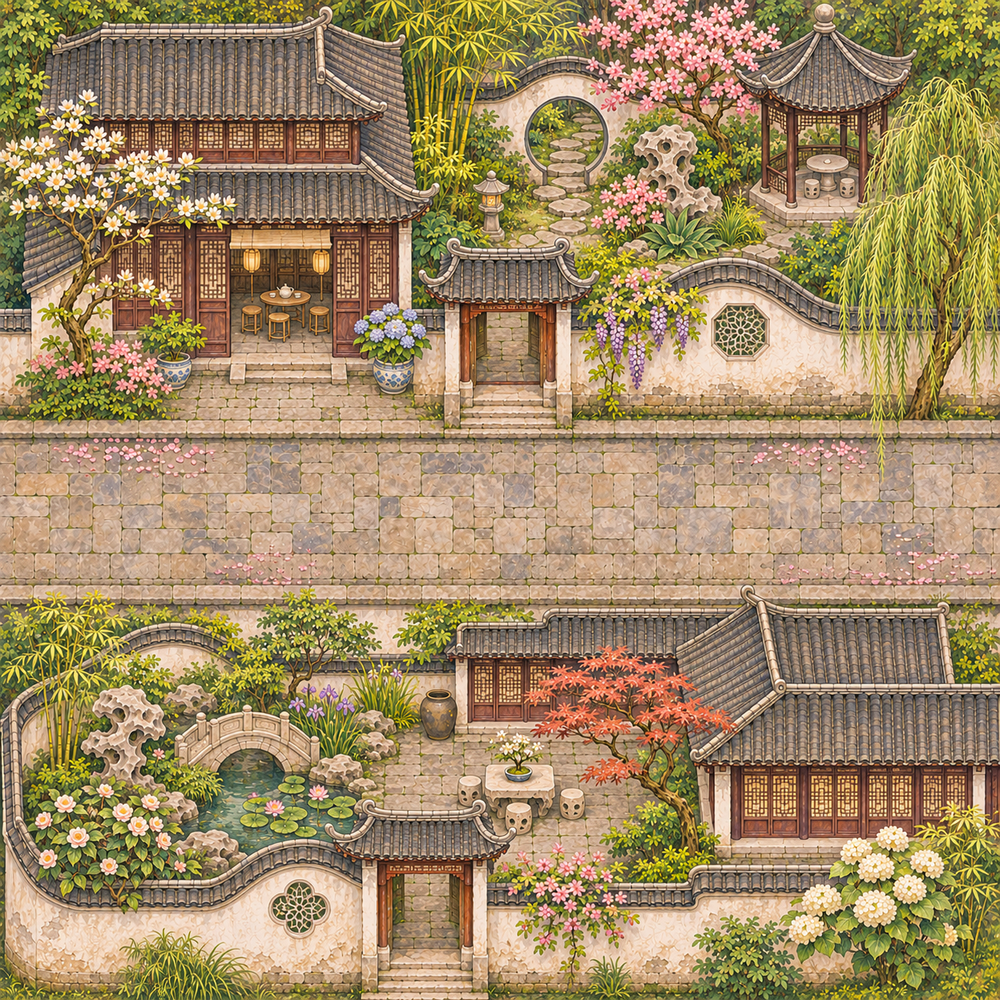

Neighbouring-tile joining comparison
The composition is street ↔ street (N/E/S/W = LSLS for both). Their rooftops stay upright; neither square is rotated or blurred. The gold bands show the required 20%-high openings when enabled.
Checking original image files…

Preserved in Git history and current main. Not a new image.

Checking file…

Checking file…
Next acceptance gate
The intended road opening at the west and east boundaries is 20% of a 1254-pixel image, approximately Y502–752, with neither buildings nor foliage crossing into the paved street mouth. Even though the two images have the same legal LSLS signature, only a real image-level review at 1× and 3× can establish whether their borders are convincing.
No automatic 16/18 artwork score is claimed. Historical details, road width and seam quality still require review.